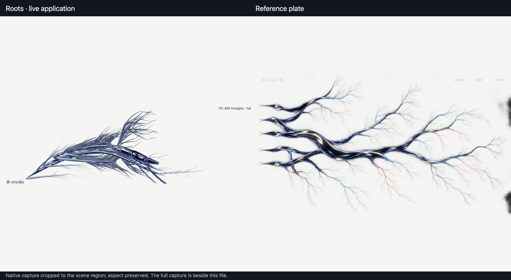
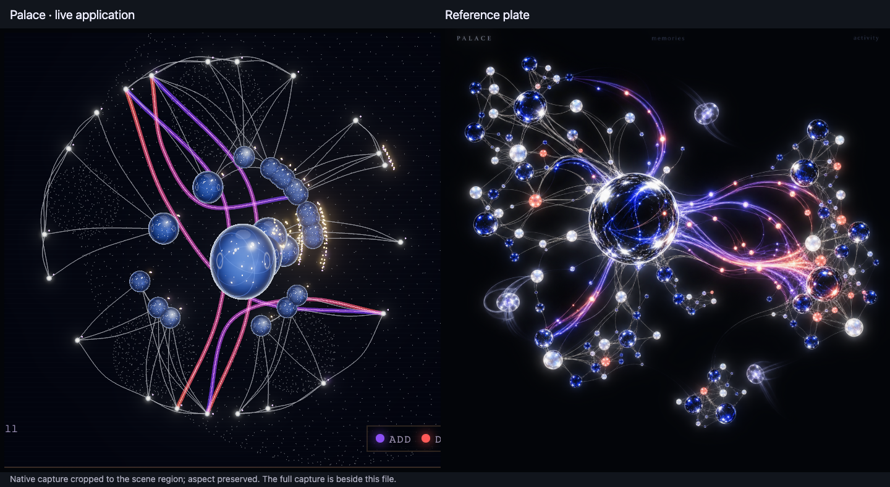
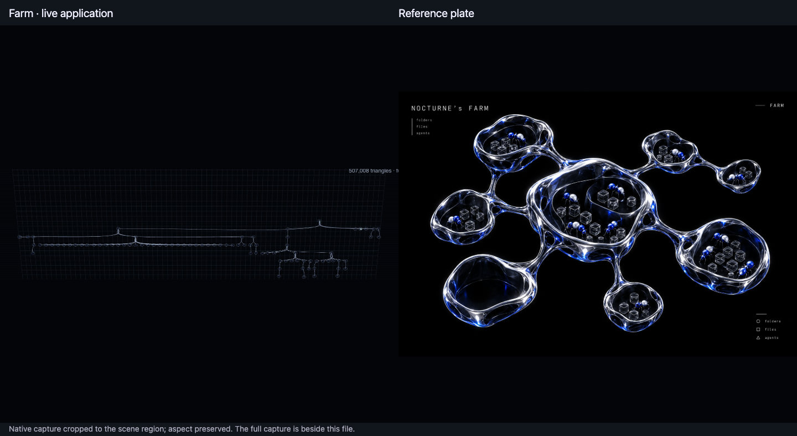

For the owner's eye. Live application at 2× on a disposable identity with real work: three threads (15 turns, 115+ tool calls), one Symphony (two worktree attempts, three judges), 45 memories with real retrieval counts (12 down to 0) and live curator passes. Each side-by-side crops the native capture to its scene; the full captures sit beside them. Recordings are 10 s of the running app while real work happened, with a slow camera drag.
Efficient tier: steady 60 fps at the display cap; uncapped, Roots 760+ fps and Palace ~1,700 fps with bloom (receipts/efficient-performance.json).

What still differs: the plate reads as one wide dark trunk with long fine branching; here the eight roots merge into a thinner trunk and the branches are shorter and denser, with only the thread turns in bright chrome and the stopped worker roots in dark satin.
Recorded during a live turn: tool calls 46 → 63 while recording.

What still differs: the plate is denser, with many more small lit nodes, brighter blue-white glass and a bigger central sphere; here 45 memories give a sparser radial web, and the glass reads bluer and softer.
Recorded while a real curator pass ran: the streams appear as it visits families.

The Farm renderer is unchanged by this packet and still reads as a flat directory tree, far from the plate (F119). On a very large folder it freezes the page (F122).
{kind=link}
{kind=link}
{kind=link}
{kind=link}
{kind=link}
{kind=link}